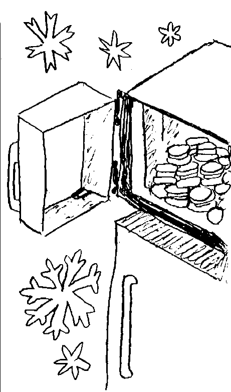
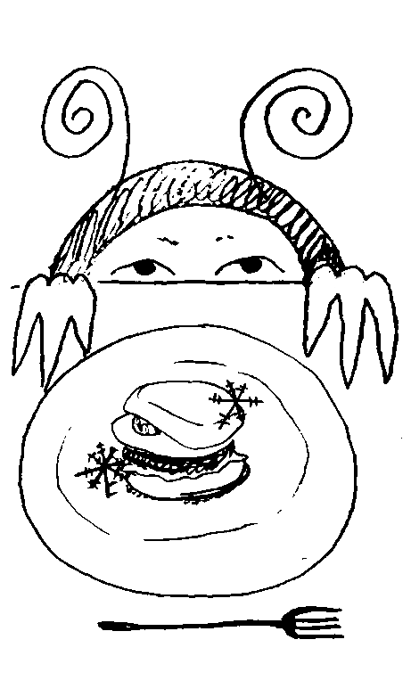

How to Freeze English Muffins
English muffins are a delicious baked good that many people enjoy eating for breakfast. While they do last for a few days in a plastic bag on the counter, they can begin to
mold
after that. If you want to save your English muffins for much longer,
consider freezing them.
A properly frozen English muffin can last months in your freezer. You just need to freeze an English muffin while it's fresh, prepare it properly, and wrap it properly in order to enjoy it at a later time.
Pre slice the English muffins. Use a serrated knife to slice each English muffin before you freeze it.
While most English muffins are partially sliced when sold,
it's important to slice them the rest of the way through with a knife.
This allows you to detach the 2 sides while it is still frozen. Pre slicing the English muffins will make them easier to use down the line.
It will not diminish their ability to be frozen.
Consider adding toppings before freezing. If you are interested in using the English muffins for specific sandwiches, you can add toppings before freezing.
Many people
use English muffins for egg and cheese sandwiches.
You can scramble the eggs and then put them on the English muffin with a slice of cheese.
Freezing the entire composed sandwich will allow you to have an easily heated meal ready to go when you need it. You can add a wide array of ingredients to your English muffin sandwich. For instance, many people like to put meat on their egg sandwiches. However, there are some toppings that may not freeze well.
For example, some vegetables, like lettuce, don't keep the right texture after being frozen.
Also, common non-sandwich toppings, such as butter, cream cheese, and fruit preserves, should not be added before freezing. These toppings should be put on after the English muffin has been toasted. Wrap the muffins individually with a freezer-safe wrap. To ensure that you can easily remove each individual English muffin from the bag once they are frozen, you can wrap the muffins individually. Use plastic wrap, wax paper, or freezer paper to wrap each individual muffin. This will guarantee that they don't stick together and will provide an additional layer of protection against freezer burn.
You do not have to wrap each half of the English muffin separately.
Instead, keep the 2 halves together.
They can be separated easily when frozen by sliding the tip of a butter knife between them.
If you are freezing the English muffin with toppings inside of it,
this step is important.
It will keep the
entire
sandwich together while in the freezer. Put the English muffins in a plastic bag. You can either put the English muffins back in the bag they came in or use a new resealable freezer bag. The benefit of using a resealable bag is that it will keep freezer burn at bay better than the original packaging. However, if you use the bag that the English muffins came in, you are not wasting an additional plastic bag. Make sure that you remove as much air as possible from the bag before sealing it. If you are using the original bag for the muffins, close it tightly with a bag tie or tie the bag in a knot at the top. Mark the bag with the date you put the muffins in the freezer. This will help you keep track of how long they have been frozen.
Freeze English muffins as soon as possible.
English muffins retain the best flavor and texture when they are frozen as soon as you get them home.
If an English muffin is stale or otherwise over-the-hill, freezing it will
not
make it better.
If you plan on eating your English muffins within a day or 2, there is no need to freeze them.
Place the muffins in an area with a cold and constant temperature. How long your English muffins last in the freezer depends on the quality of your freezer and their location in the freezer. An English muffin in the door of your freezer, where it defrosts and refreezes repeatedly, is likely to get freezer burn quicker than an English muffin in the back of a freezer that keeps temperature well. The coldest, most constant spot in your freezer is the center back.
Freezer burn is created when moisture from the food evaporates and then is refrozen. When a food is in the door of the freezer, it will develop freezer burn faster because it goes through freezing and thawing repeatedly.
Keep English muffins in the freezer for up to 6 months.
English muffins,
like most breads,
last a long time in the freezer. While they can last up to 6 months, it's a good idea to use them within a few months.
After that, they can start to develop freezer burn and take on the taste of other foods in the freezer.
Try to use your oldest frozen English muffins before those that you have just frozen.
Using your oldest products first rotates your freezer's content and minimizes the chance of having freezer burned foods.
Use pre-assembled sandwiches within 1 month.
English muffins that have been assembled into sandwiches can typically be stored for up to a month. This shortened freezer life is due to the moisture introduced by other ingredients and the amount of time the other ingredients can be frozen. Look for signs of freezer burn and discoloration. Your English muffins might not be good any longer if ice develops on the inside of the plastic bag. This is a tell-tale sign that they have gotten freezer burn. You should also look at the muffins themselves and see if they have any areas of discoloration.
Areas that are very white are typically freezer-burned areas that will NOT taste good.
Also look at the state of any toppings you put in preassembled English muffin sandwiches. If the toppings look discolored or dried out, then they are likely freezer burned.
One of the reasons it's so great to keep English muffins in your freezer is that you can
simply
pull them out frozen and pop them straight into a toaster or oven.
This makes them ideal as a quick snack that can be stored for a long time without fear of spoiling. You can use a toaster, toaster oven, or traditional oven to heat up your frozen English muffin.
Frozen English muffins that are allowed to thaw out are typically fine to use, although they tend to be
soggy.
Warming them in a toaster or an oven is ideal,
as opposed to eating them without warming.
Use the frozen setting on your toaster or toaster oven, if available. Some toasters have a setting that is made specifically for heating up frozen foods.
It simply adds a bit of time to the toasting cycle so that the English muffin gets totally warmed up on the inside and toasted on the outside.
A frozen English muffin will take a little longer to cook or toast than one that wasn't frozen.
